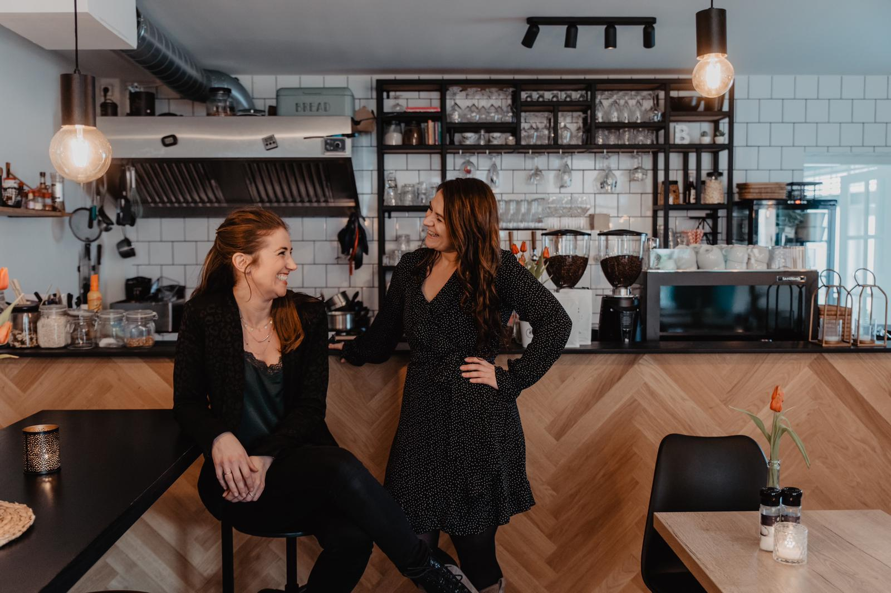
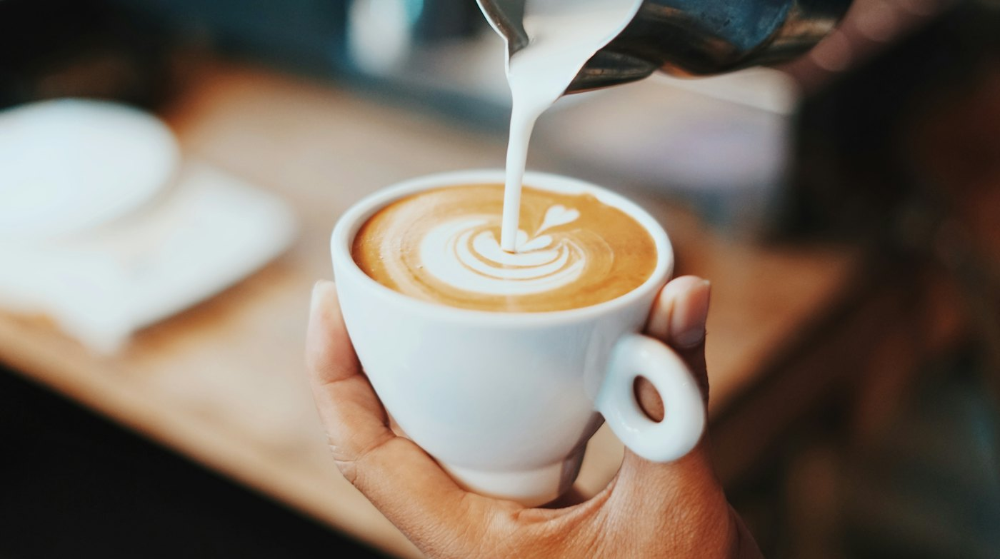
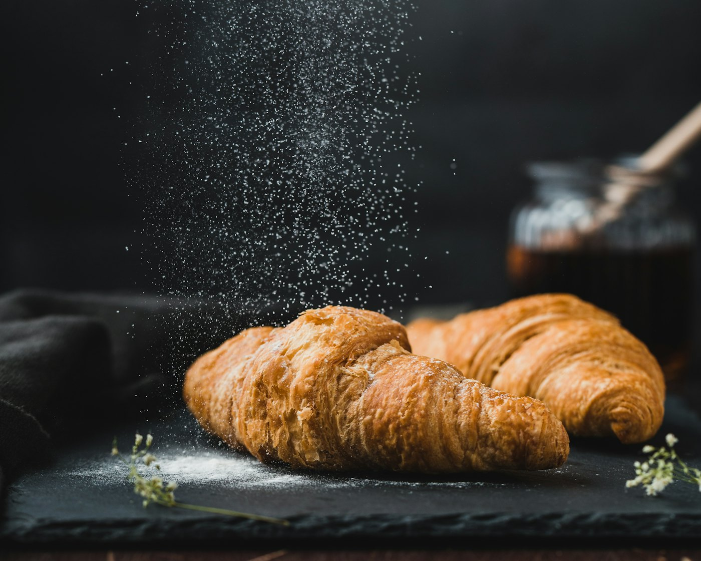

High Tea
2 uur onbeperkt Clipper thee en verse thee, met een etagère vol scones met clotted cream en jam, diverse sandwiches, hartige hapjes en huisgemaakte zoetigheden.

Bier Barista Bites
Onze gezellige huiskamer in de Gravenstraat in 's-Gravenzande. Vers ontbijt, een smakelijke lunch, (speciaal)koffie met iets huisgemaakts erbij, en op vrijdag en zaterdag een (late) middagborrel.
Woensdag t/m zaterdag vanaf 9.00 uur open
Wo & do 9.00 tot 16.00 Vr & za 9.00 tot 19.00 Ma, di & zo gesloten
Begin je dag goed met een vers ontbijt, kom genieten van een smakelijke lunch of kom langs voor heerlijke (speciaal)koffie, huisgemaakte taartjes zoals cheesecake in verschillende smaken en andere homemade zoete zaken.
Op woensdag en donderdag zijn wij jouw gezellige koffiezaakje en lunchroom, open tot 16.00 uur. Op vrijdag en zaterdag zijn we open tot 19.00 uur en kun je genieten van een gezellige (late) middagborrel met een breed assortiment bieren, goede wijn en een ruime keuze aan borrelhapjes.
Je kunt bij ons ook terecht voor high wine en Hop & Hap bierproeverijen. Kijk bij de arrangementen.
Liefs, Pearl & Kim & de meiden van Plan B
Een klein kinderhoekje, kleurplaten en verschillende lunchgerechtjes voor onze kleinste gasten.
Huisdieren kunnen we helaas niet toelaten in verband met onze open keuken.
Wij bieden geen mogelijkheid tot bezorgen of afhalen van lunchgerechten.



Alleen per tafel te reserveren, minimaal 1 dag van tevoren. Arrangementen zijn niet te combineren.
2 uur onbeperkt Clipper thee en verse thee, met een etagère vol scones met clotted cream en jam, diverse sandwiches, hartige hapjes en huisgemaakte zoetigheden.
3 zorgvuldig gekozen Italiaanse wijnen, met bij elke gang hapjes met een Italiaans tintje, zoals risottoballetjes en bruschetta. Met nootjes, olijfjes en tafelwater.
Een bierproeverij met 5 bieren in proefglazen, bijpassende hapjes en uitleg bij elk bier.
"De leukste plekjes vind je vaak in de kleinste straatjes."
In 2015 leerden Pearl en Kim elkaar kennen tijdens hun werk in een hotel-restaurant. De droom: samen een eigen horecazaak. Na veel bezichtigingen kwam de Gravenstraat voorbij, een knus zaakje in een gezellige straat.
Pearl opende op haar 19e een snoepwinkel en op haar 24e een broodjeszaak. Na twee keer buiten de horeca te hebben gewerkt, keerde ze terug.
Kim hielp in de horecazaak van haar vader en deed ervaring op in binnen- en buitenland. Begin 2014 startte ze met StiBON (Stichting Bieropleiding Nederland) en in maart 2017 behaalde ze in Obertrum (Oostenrijk) het diploma Internationaal Biersommelier.
Het resultaat: een sfeervolle en gezellige plek met heerlijke koffie, versgebakken taartjes, een goed ontbijt, smakelijke lunches en bijzondere bieren.
Kim is de 100e Biersommelier van Nederland
| Maandag | gesloten |
|---|---|
| Dinsdag | gesloten |
| Woensdag | 9.00 tot 16.00 |
| Donderdag | 9.00 tot 16.00 |
| Vrijdag | 9.00 tot 19.00 |
| Zaterdag | 9.00 tot 19.00 |
| Zondag | gesloten |
Tijden kunnen afwijken.
Plan B